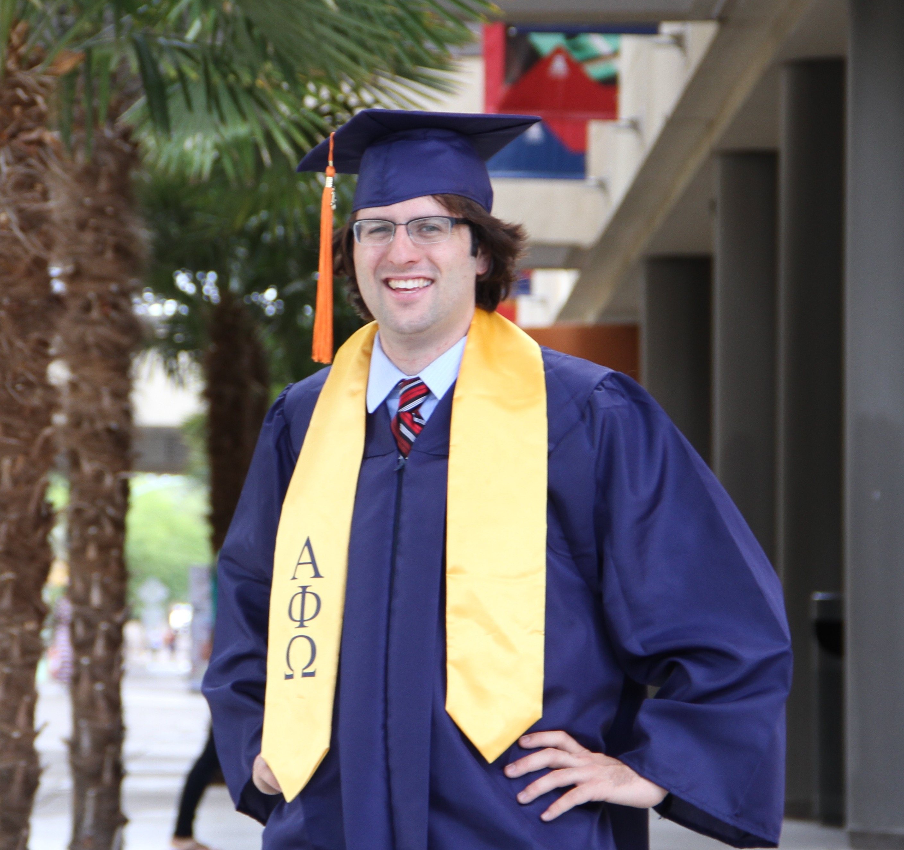

About Me
My name is Ryan Grady. I’m a University of Arizona alumni, a web development student, and an electrical engineer at Raytheon. While I was in college I served on my residence hall’s hall council for two years, worked at two different primary schools in Tucson teaching kids about math and science, and was part of a community service fraternity called “Alpha Phi Omega” that really took steps to leave a positive mark on the Tucson community. While at Raytheon, my team and I have worked over the course of two years to significantly improve an advanced manufacturing line that exists within the company, which I am very proud to be a part of. I am the kind of person that takes challenges head on, and I am incredibly proud of all the great achievements that I have been able to accomplish along the way.
Working for the defense industry has given me a lot of time to reflect on what I really want to do with my life. While I can’t be 100% sure where my career will take me, I have decided that my primary career goal going forward will be to dedicate myself to leaving long lasting positive impacts on my local community. My immediate career goal is to become successful at web development, because I believe that a lot of small to medium sized business owners could really benefit from having a better website, and my mission would be doing what I can to help those people become as successful as possible. For right now I am focused on learning as much as I possibly can, and I believe that with enough work and the right attitude, anything is possible.